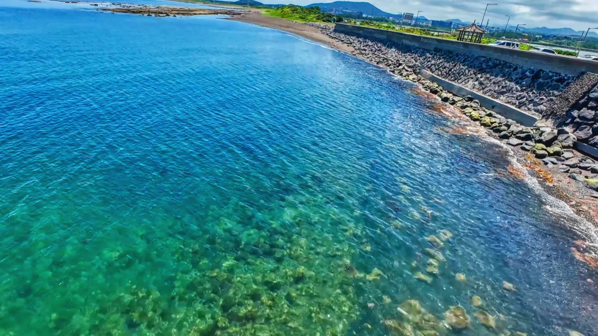
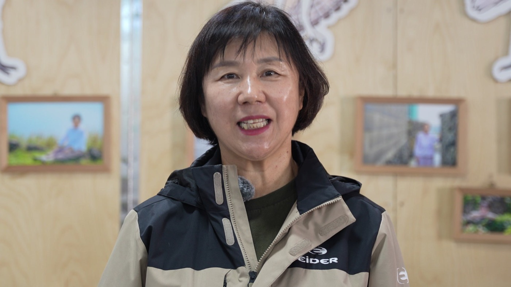
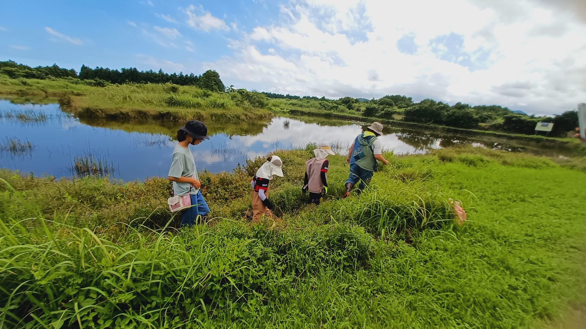

제주생태관광지원센터
자연과 사람이 서로를 돌보는 균형이 제주의 건강한 문화가 되도록 돕습니다. 센터가 하는 일과 행사 일정, 지난 기록을 이곳에서 만나 보세요.
Schedule
오고 생이 제주로 탐조대회 · 2026 가을 생태관광주간 · 제3회 갯것이영화제 × 2026 생태관광주간
Projects
Ecotourism
환경보전과 지역주민의 복지 향상을 위하여 자연지역으로 떠나는 책임여행입니다.
조금씩 길게 오래 여럿이 경제활동을 하고 그리고 자연환경 보전을 하면서 인간과 자연이 같이 살아가는 지속가능성을 확보해야 될 것 같습니다.(사)제주생태관광협회 협회장 고제량

What we do
제주 곳곳의 자연과 마을을 만나는 프로그램을 만들고 널리 알립니다.
주민이 직접 기획하고 운영할 수 있도록 곁에서 돕습니다.
생태관광을 이끌어 갈 사람을 함께 키웁니다.
제주의 생태관광 자원과 현장을 조사해 기록합니다.
여행자와 주민, 전문가를 잇습니다.
Records
생태관광 프로그램 현장의 사진과 기록 영상을 모았습니다.
